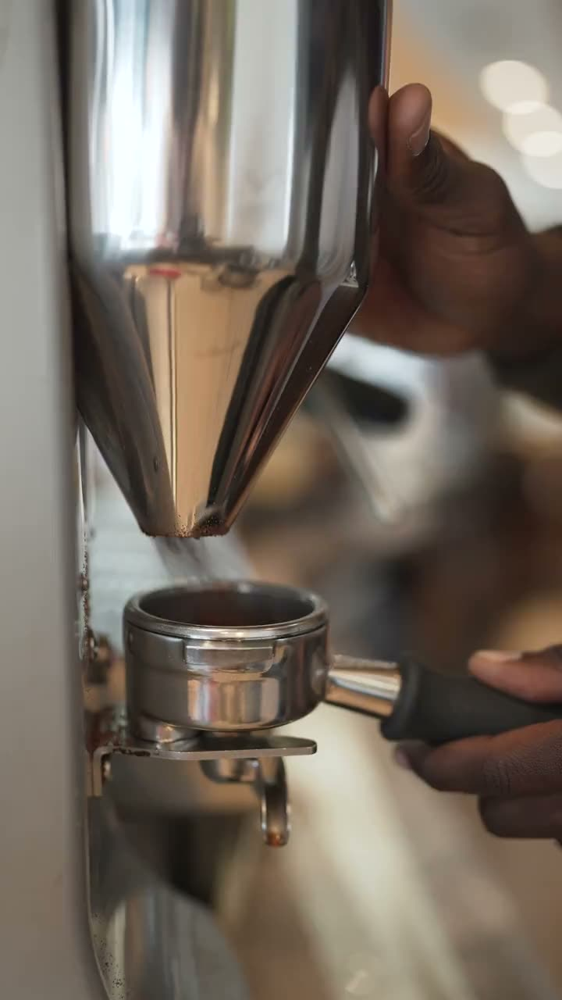
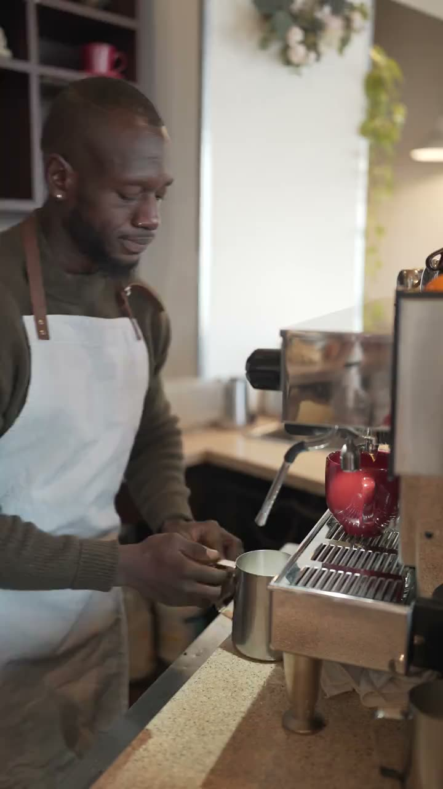
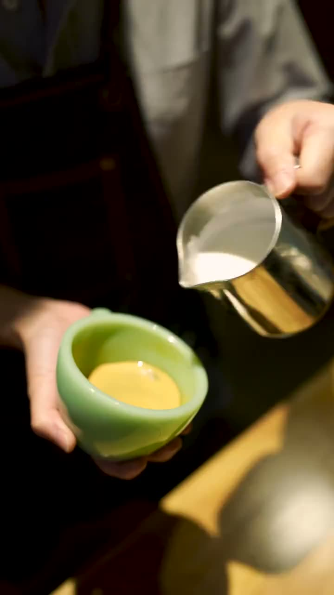
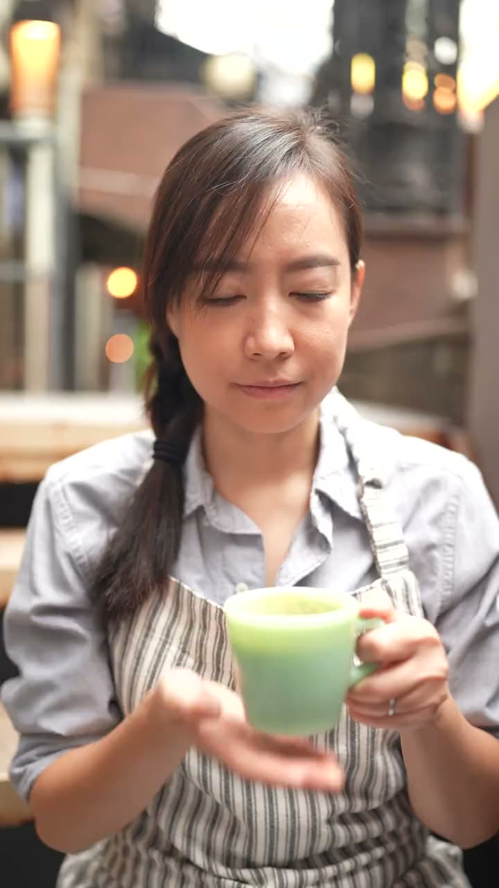
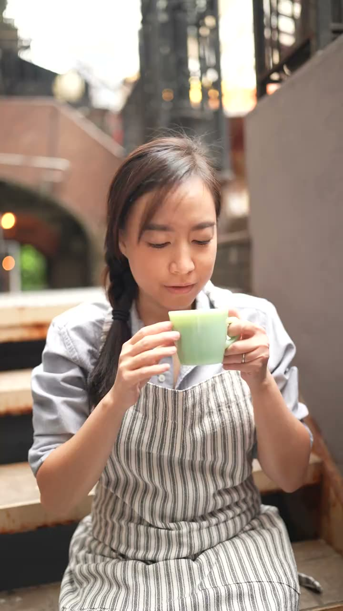
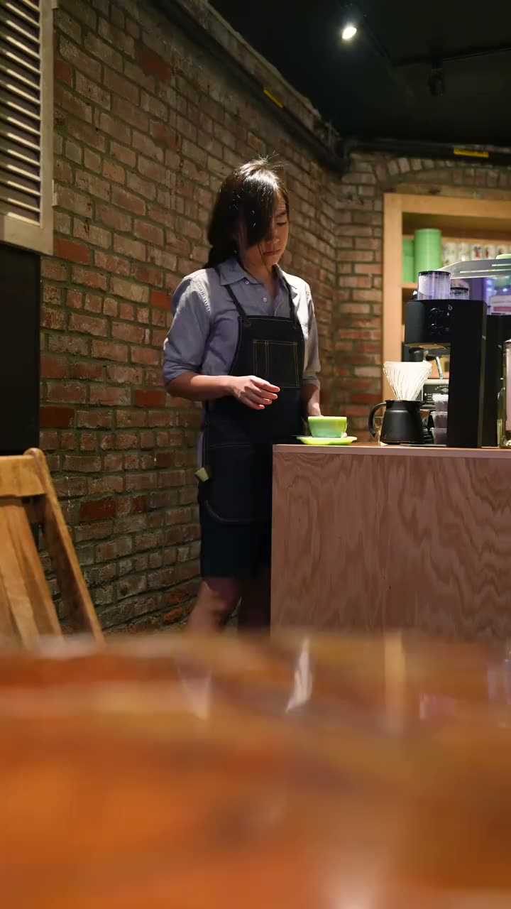
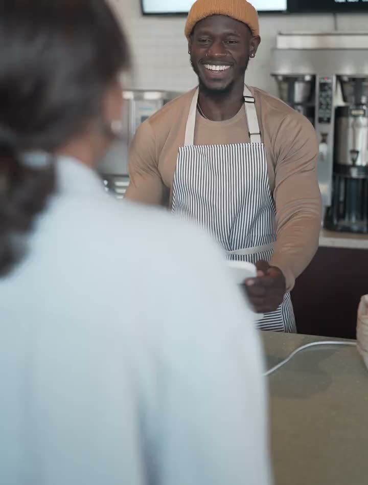
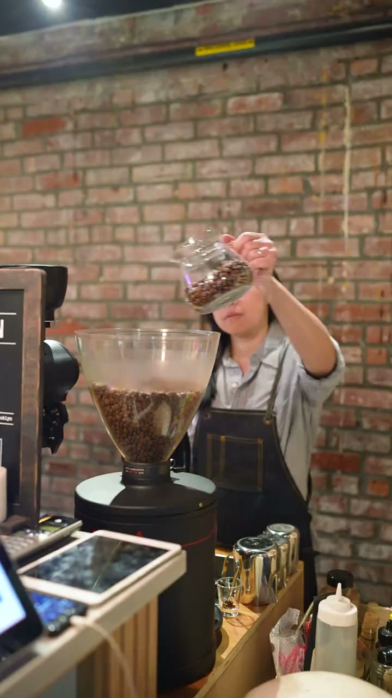

Siéntate.
Es tu rato.
RATO es una cafetería. Pides, te sientas y el móvil espera. Con cinco minutos llega.
Ver cuánto tengoLlevo desde las seis sin parar.
Y aún me queda medio día.
Un café para llevar, que no llego.
¿Y si te sientas cinco minutos?
Pedir para llevar también es decidir que no tienes ni cinco minutos. Casi siempre los tienes.
Cinco minutos
Molemos ahora
El grano se muele para tu taza. Te va a oler antes de que te llegue.
Sin atajos
Ni cápsulas ni leche de termo. El barista calienta la tuya con la jarra en la mano.
El dibujo
No hace que sepa mejor, pero te obliga a mirarlo antes de beber.
A tu mesa
Te lo llevamos nosotros. Nadie grita tu nombre desde la barra.
Tuyo
Hueles, bebes y no contestas a nadie. El último minuto es el que has venido a buscar.
La carta, en minutos
Lo primero aquí no es cuánto cuesta, sino cuánto te puedes quedar. Dinos lo que tienes y te decimos qué pedir.

5 minCafé solo
Corto, recién molido. Para quien solo necesita sentarse.

5 minCortado
Con una nube de leche caliente.

5 minCafé con leche
En taza grande y con dibujo.

5 minTé de la casa
Lo que tarda en infusionar ya es tu rato.

10 minFlat white y galleta
Doble de café. La galleta sale del horno de aquí.

10 minTostada con tomate y aceite
Pan de verdad y sin prisa en la plancha.

10 minBizcocho del día
Pregunta cuál hay. Cambia según amanece.

20 minDesayuno sentado
Café, tostada y zumo. Y nadie te trae la cuenta sin pedirla.
- 20 min
Huevos con pan
Se hacen cuando los pides, así que tardan.
- 45 min
La mesa de la ventana
Un libro, un segundo café y el móvil en el bolso.
Con 5 minutos te llega para un café con leche.
Carta de ejemplo. Se paga en euros, claro.
Un sitio que frena
Sillas en las que apetece quedarse y una barra a la vista, para ver cómo hacen lo tuyo. Si pasas el ratón por las imágenes, hasta ellas van más despacio.
El rato, en veinticinco segundos
Dura menos que el café. El spot de RATO cuenta lo mismo desde el lado de quien va corriendo.
Lo que nos preguntan
¿Lo puedo pedir para llevar?
Claro. Pero te lo vamos a preguntar dos veces.
¿Y si solo tengo dos minutos?
Entonces tómate un solo en la barra, de pie, como en Italia. Dos minutos también son tuyos.
¿Tenéis wifi?
Sí. La contraseña está en la cuenta, así que te la damos al irte.
¿Puedo trabajar aquí?
Puedes. Tenemos pocos enchufes a propósito, y las mesas de la ventana son para quien viene sin portátil.
¿Hay opciones sin lactosa?
Sí, y también bebidas vegetales. El dibujo sale peor, pero sabe igual de bien.
RATO no existe, así que no te podemos poner ese café. Es una marca de demostración: el nombre, el logo, el spot y esta web los he hecho yo, Esteban, para enseñar cómo construyo una marca. La carta y el local son un ejemplo.
Hablamos